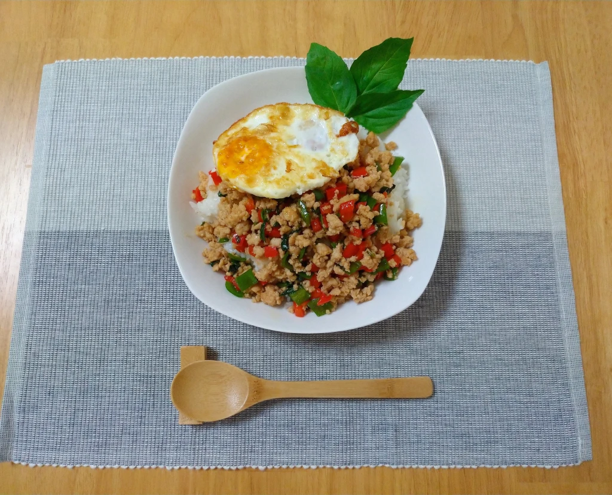

CHÚNG TA ĐƯỢC GÌ KHI VỨT BỎ ĐỒ ĐẠC

“Đồ đạc ít, hạnh phúc nhiều” – Sasaki Fumio.
Quả đúng là như vậy. Từ khi vứt bỏ đồ đạc, cuộc sống của mình trở nên đơn giản hơn và hạnh phúc hơn.
Chúng ta được gì sau khi vứt bỏ đồ đạc? Sau đây mình xin được chỉ ra những lợi ích của việc vứt bỏ.
1. Căn phòng trở nên gọn gàng rộng rãi
Hiển nhiên là càng vứt nhiều đồ thì căn phòng sẽ càng trở thoáng đãng, gọn gàng hơn. Nhờ đó mà việc dọn dẹp hay quản lý đồ đạc cũng sẽ trở nên dễ dàng hơn. Bạn sẽ không còn phải gặp khó khăn khi tìm đồ đạc, bởi vứt bỏ những thứ không quan trọng đồng nghĩa với việc bạn giữ lại những thứ thực sự cần thiết.
2, Tiết kiệm thời gian và tiền bạc
Tiết kiệm thời gian và tiền bạc
Hồi xưa mình luôn có suy nghĩ kiểu: “để tí dọn, à mà thôi đợi nó bừa bộn thêm tí rồi dọn tổng thể”. Trong tuần mình không tốn thời gian cho việc dọn dẹp nhà cửa, nhưng vì thế mà căn phòng rất bừa bộn. Còn đến cuối tuần hay hôm nào rảnh thì mình mất tới cả ngày để dọn cho sạch. Nhưng được vài hôm thì nó lại bừa bộn.
Lấy ví dụ về quần áo. Càng nhiều quần áo thì bạn lại càng tốn thời gian lựa chọn xem hôm nay nên mặc gì. Mặc xong cái áo thì thấy nó không hợp với quần, thế là lại lục tung cả tủ đồ ra. Rồi bạn nhìn đồng hồ thì thấy đã muộn, thế là chưa kịp cất lại vào tủ bạn đã vội rời khỏi nhà, để lại đống quần áo trên giường hay sofa.
Vứt bỏ đồ đạc giúp bạn giảm bớt thời gian đi mua sắm qua đó tiết kiệm được tiền bạc
Khi bạn vứt bỏ đồ đạc, bạn sẽ trải qua một cảm giác tiếc nuối khi phải vứt chúng đi. Bạn cảm thấy mình đã lãng phí tiền bạc cho những thứ mà bạn chỉ có hứng thú trong một thời gian nhất định. Và bạn sẽ dần hình thành được suy nghĩ tiết kiệm, bớt tiêu tốn vào những thứ không cần thiết cho cuộc sống của bạn.
3. Sức khỏe và tâm lý
Càng nhiều đồ càng khiến chúng ta cảm thấy uể oải mỗi khi có ý định dọn đồ.
Quay lại với ví dụ quần áo. Bạn cảm thấy mệt mỏi và chỉ muốn chạy đến giường hay sofa nằm. Nhưng đống quần áo đã lục tung từ buổi sáng vẫn nằm ngổn ngang ở đó. Bạn muốn dọn, nhưng mệt rồi, còn đâu sức mà dọn. Và cứ thế bạn nằm lên luôn cả quần áo, rồi lại cầm điện thoại check facebook, Instagram. Trong đầu bạn là một mớ hỗn độn những suy nghĩ như “phải dọn cái đống quần áo này, ôi lại còn phải nấu cơm, cơ mà còn chưa nhắn tin cho bạn gái/bạn trai, ôi sao mà lắm việc thế”.
Cũng với ví dụ trên, nhưng lần này căn nhà của bạn luôn luôn sạch sẽ và gọn gàng. Bạn sẽ không tốn thời gian cho việc dọn dẹp, và nhờ đó bạn có thể thảnh thơi cắm cơm và nấu một bữa tối ngon lành.

Vứt bỏ đồ đạc = một cuộc sống đơn giản và dễ dàng
Qua những ví dụ này mình muốn nói rằng, vứt bỏ đồng nghĩa với việc giúp chúng ta cắt bớt đi sự lựa chọn, qua đó giúp cuộc sống ở trên dễ dàng hơn.
Bộ não chúng ta luôn tiêu tốn năng lượng cho việc lựa chọn. Càng nhiều sự lựa chọn ta càng tốn thời gian cho việc suy nghĩ và đắn đo, cũng như tốn năng lượng dẫn đến việc không có sức tập trung cho công việc khác.
Vứt bỏ đồ đạc đồng nghĩa với việc căn phòng trở nên sạch sẽ hơn.
Một khi căn phòng trở nên sạch sẽ hơn có nghĩa là bạn sẽ tốn ít thời gian và suy nghĩ cho việc dọn dẹp.
Ít quần áo hay đồ dùng sinh hoạt sẽ giúp chúng ta cắt bỏ được sự lựa chọn, qua đó giúp chúng ta tiết kiệm được năng lượng, đồng thời, tiết kiệm được cả tiền nong.
Đa số mọi người ban đầu sẽ có suy nghĩ rằng: Vứt bỏ = căn phòng gọn gàng sạch sẽ. Đúng. Đó là suy nghĩ ban đầu. Nhưng rồi dần dần bạn sẽ nhận thấy rằng lợi ích của việc vứt bỏ không chỉ dừng lại ở đó. Nó còn giúp chúng ta tìm thấy được ý nghĩa của cuộc sống hiện tại.
Và đây cũng chính là những gì Sasaki muốn gửi gắm trong cuốn sách đầu tay của anh.
Lối sống tối giản không chỉ là cách người Nhật loại bỏ đồ đạc và sắp xếp không gian sống phù hợp, mà còn là phương tiện sống giúp người Nhật tìm thấy ý nghĩa, hạnh phúc thật sự của cuộc sống trong thế giới hiện đại


COMMENT
Tarobam 1 ngày trước
Ah the memories of watching Shelter for the first time, and now to re-live the feeling with Hiyumi singing it.
Justin Y. 1 ngày trước
Imagine traveling back decades and explaining to him that in the future, hundreds of thousands of people will be listening to his song on a supercomputer with a picture of a Japanese cartoon.
DigiNeko 2 ngày trước
Classic Masterpiece.